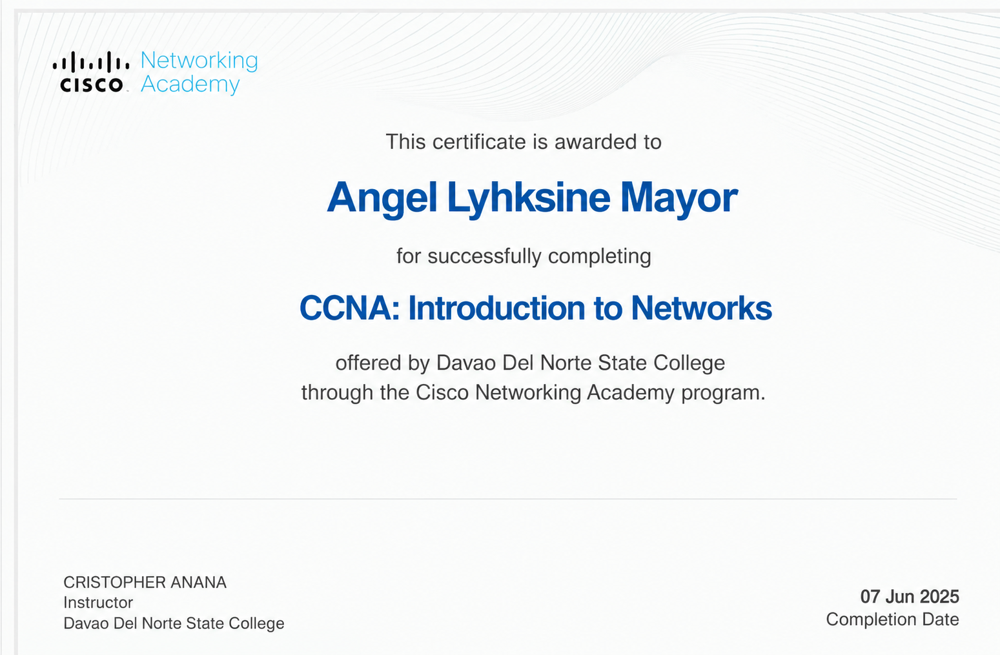

Web Development
Building and styling web pages with core front-end technologies.
HELLO, I'M
A fourth-year BS Information Technology student at Davao del Norte State College, interested in building useful digital solutions through web development, software projects, and cybersecurity.
Code · Design · Problem-solving
01 / ABOUT ME
I’m a fourth-year Information Technology student who enjoys learning how technology can solve real-world problems.
I am currently studying at Davao del Norte State College, developing my skills in programming, web development, database management, and system design through academic activities and projects.
I am eager to continue learning, improve my technical skills, and contribute to practical technology-based solutions. This portfolio showcases my academic projects and ongoing development as an IT student.
CAREER OBJECTIVE
To apply my IT knowledge in a collaborative environment, strengthen my technical and problem-solving abilities, and contribute to meaningful software and technology projects.
02 / TOOLKIT
A snapshot of technologies I have studied or used in academic work.
Building and styling web pages with core front-end technologies.
Practicing programming concepts and application logic.
Working with structured data and database-backed applications.
Learning source control and collaborative development workflows.
03 / SELECTED WORK
Academic projects and concepts exploring real-world problems.
A proposed Crown-of-Thorns Starfish monitoring system that uses underwater images for AI-assisted detection and counting, with GIS mapping to help visualize reef observations and infestation levels.
View GitHub profile ↗A home-service platform concept designed to help users discover verified service providers for repairs and household needs, with requests, reviews, and nearby matching.
View GitHub profile ↗A phishing and scam detection concept focused on helping users recognize suspicious links and messages through risk indicators and clear safety guidance.
View GitHub profile ↗04 / EDUCATION
Building a foundation in information technology through coursework and academic projects.
Davao del Norte State College
Studying information technology with practical academic work in programming, web technologies, databases, and system development.
Northlink Technological College.
05 / CERTIFICATES & ACHIEVEMENTS
Here are the certificates and training programs I have completed as part of my learning journey in Information Technology.
 View Certificate ↗
View Certificate ↗
CERTIFICATE
Davao del Norte State College
2026
View Certificate ↗CERTIFICATE
Davao del Norte State College
2025Recognized for academic performance at Davao del Norte State College, showing dedication to studies, consistent effort, and a willingness to learn.
Completed Cisco-related IT training that helped improve my understanding of computer networks and essential networking concepts.
Attended an advanced seminar to learn more about information technology, explore new ideas, and develop my technical and professional knowledge.
Applied my knowledge in a workplace setting while improving my communication, teamwork, adaptability, and sense of responsibility.
Worked with others on academic activities and projects, sharing ideas, completing tasks, and contributing toward common goals.
Developed IT project concepts and system designs that strengthened my problem-solving skills, creativity, and understanding of software development.
06 / LET'S CONNECT
Feel free to contact me about academic collaborations, project discussions, or opportunities to learn and grow in the information technology field.
Send me an email